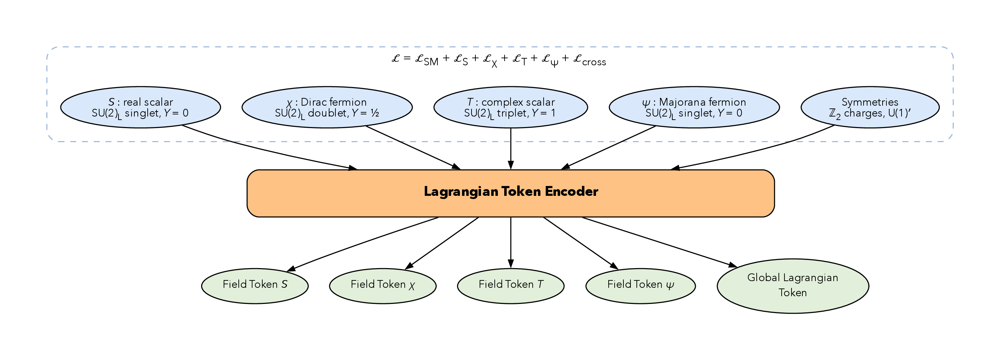
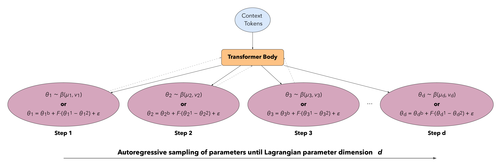
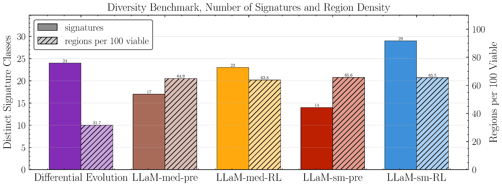

Most of the parameter space of any beyond-the-Standard-Model theory is already dead. The interesting question is not which points a given experiment excludes, it is which points nothing excludes, and how you find them when the space is high-dimensional and every evaluation is expensive.
This post is about treating that as a search problem: an agent proposes points in the parameter space of a Lagrangian, the accumulated experimental constraints act as the environment, and the reward is finding regions that survive everything we have measured so far.
Why this is a search problem
A single-field extension of the Standard Model can easily have five or more free parameters spanning several decades each. Scanning that space uniformly is hopeless: the viable regions are thin, curved, and vastly outnumbered by excluded volume. Worse, the exclusions come from a heterogeneous pile of experiments, direct detection at LZ, DarkSide, and XLZD, indirect detection at Fermi, CTA, IceCube-Gen2, and AMS-02, and collider bounds like the Higgs invisible branching ratio, each of which carves the space in a different direction.
A policy that learns where the survivors are, and concentrates its proposals there, does dramatically better than random sampling.
Watching the policy find the viable region
The clearest way to see this is to watch a single benchmark Lagrangian over the course of a run. Early on, the agent's proposals are scattered and almost everything it touches is excluded. By the end of the run, the policy heads have collapsed onto a thin sheet of surviving parameter space and are sampling it densely.
Loading…
The structure the constraints impose
Aggregating across Lagrangians, the constraints induce a decision tree over the space: each experimental question splits the surviving points into those that would show a signal and those that would not. Reading the tree tells you which measurements are actually doing the discriminating, and which are redundant given everything else.
Some of the most useful splits are the ones a literature-search agent proposes rather than the ones already in the pipeline, existing bounds nobody thought to apply to this corner of parameter space. Others are genuinely new observables the agent invents, tagged by how plausible they are to actually build.
How the agent sees a Lagrangian
Rough placement for now: these are the method figures, covering how a Lagrangian is turned into tokens, what the network does with them, and how a proposal is sampled one parameter at a time.



Does it scale with dimension?



What comes next
The open question is whether the observables the agent proposes are worth taking seriously as experimental targets, whether "this measurement would split the surviving parameter space in half" is a useful way to prioritize what to build next.
Additional materials
Pick a Lagrangian class for its decision tree at full resolution, and for the raw replies the literature-search agents gave when they proposed the splits in it.
Draft: the body text above is placeholder written from the figures, rewrite it with the actual setup and results before sharing this link widely.